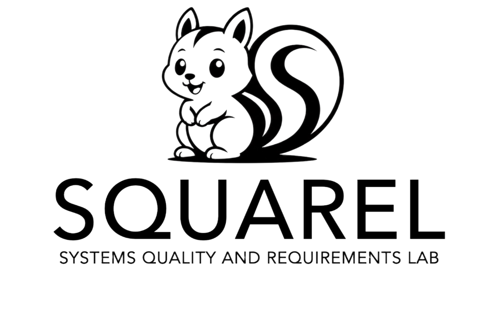

RE
Requirements Engineering
Understanding, modelling, prioritising, and managing stakeholder needs and requirements.
Welcome to
Systems Quality & Requirements Lab
We conduct interdisciplinary research to understand stakeholder needs and develop high-quality and sustainable software systems.

About
The lab focuses on understanding stakeholders’ needs and developing solutions that contribute to high-quality and sustainable software systems, combining technical and human-centred perspectives to address complex challenges across diverse domains.
Our work spans software engineering, requirements engineering, human-computer interaction, sustainability, systems and software quality, and health informatics.
Research
Understanding, modelling, prioritising, and managing stakeholder needs and requirements.
Studying qualities that make software dependable, usable, maintainable, and fit for purpose.
Understanding people, context, interaction, and experience in the design and evaluation of systems.
Methods and tools for designing, developing, evolving, and evaluating software-intensive systems.
Exploring technical, social, organisational, and environmental dimensions of sustainable software.
Applying software, requirements, quality, and human-centred approaches to digital health challenges.
Selected work
Investigating how stakeholder needs, contexts, and values can be represented throughout software development.
Requirements EngineeringExamining how quality characteristics can be specified, evaluated, and maintained as systems evolve.
Software QualityCombining technical and human-centred perspectives to support systems that remain useful and responsible over time.
HCI & SustainabilityPeople
Lab coordinator
PhD student
Postdoc
Associated Researcher
Student opportunities
Add a short lab announcement, publication, project update, or event here.
Use this space for concise updates about ongoing work and collaborations.
Link future entries to publications, project pages, or external announcements.